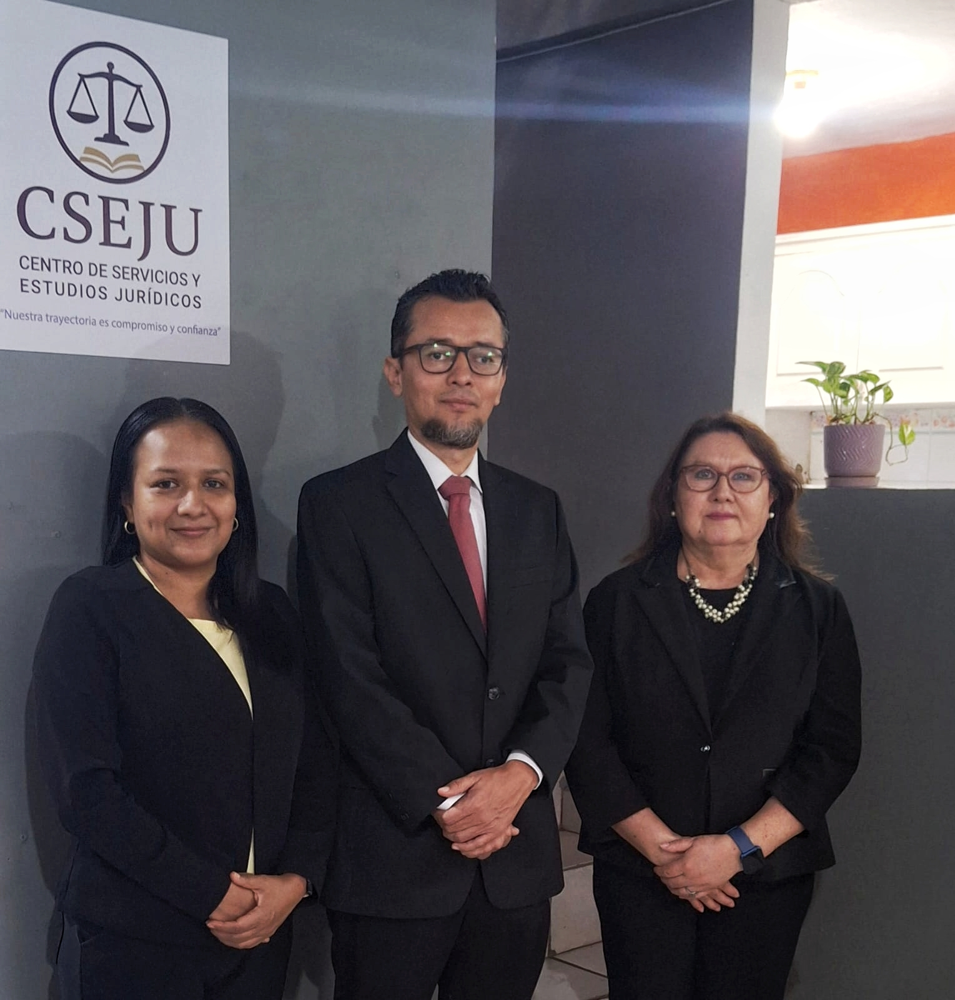
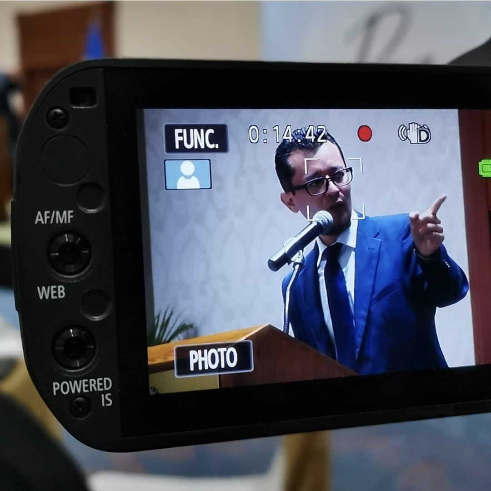

Misión
Ofrecer servicios jurídicos de calidad, procesos de formación y consultorías especializadas a entidades nacionales.
Centro de Servicios y Estudios Jurídicos · Socii Iuris
Soluciones jurídicas integrales a través de la experiencia, el conocimiento y el compromiso profesional.
Quiénes somos
El Centro de Servicios y Estudios Jurídico -CSEJU- surge en noviembre de 2025. Se constituye como un espacio para profesionales del Derecho que ponen su amplia trayectoria al servicio de personas, empresas e instituciones públicas y privadas. Surge con la idea de propiciar el ejercicio libre de la abogacía agregando una lógica de integración de capacidades según las necesidades de cada caso. El lema “Nuestra trayectoria es compromiso y confianza” se plantea como compromiso individual y colectivo de mantener una mística de trabajo que ha caracterizado la trayectoria profesional, marcada bajo la visión de acompañar a las personas en sus necesidades legales sin sustituirlas en sus decisiones, lo cual requiere claridad técnica, transparencia y empatía.
Bajo esa concepción el CSEJU mantiene también una red de colaboración con otros estudios jurídicos que comparten su perspectiva de trabajo de propiciar la adecuada atención de las necesidades legales de las personas que requieren nuestros servicios.
Ofrecer servicios jurídicos de calidad, procesos de formación y consultorías especializadas a entidades nacionales.
Ser una firma reconocida por la excelencia en servicios jurídicos, la formación y la consultoría que aportan al desarrollo del país.

Qué hacemos
Acompañamiento y representación legal con enfoque de derechos.
Brindamos asesoría y representación legal en las diferentes ramas del derecho, ofreciendo acompañamiento jurídico integral y soluciones orientadas a la protección de los derechos e intereses de nuestros clientes.
Elaboramos y formalizamos documentos e instrumentos notariales, garantizando el cumplimiento de los requisitos legales y brindando seguridad jurídica en cada actuación.
Diseñamos e impartimos procesos de formación dirigidos a operadores de justicia, funcionarias, funcionarios y ciudadanía, promoviendo el conocimiento del derecho y el fortalecimiento de capacidades desde un enfoque de derechos humanos.
Ofrecemos servicios de consultoría y asistencia técnica en temas jurídicos e institucionales, desarrollando análisis, investigaciones y propuestas especializadas que responden a las necesidades de cada organización o proyecto.
Nuestro equipo
Un equipo de profesionales del derecho con experiencia, formación especializada y compromiso con la excelencia jurídica.
Abogada y Notaria, Maestra en Derecho de Familia
Tiene más de trece años de ejercicio de la abogacía y diez de ejercicio notarial.
Es licenciada en Ciencias Jurídicas por la Universidad de El Salvador, Abogada y Notaria de la República, Maestra en Derecho Familiar por la Universidad Evangélica de El Salvador y cuenta con un Post Grado en Justicia Penal de Género y Violencia Intrafamiliar por la Universidad Tecnológica de El Salvador. Ha complementado su formación mediante programas impartidos por la Comisión Interamericana de Derechos Humanos, el Centro por la Justicia y el Derecho Internacional (CEJIL), relacionados con el reconocimiento y protección de los derechos humanos, los estándares del Sistema Interamericano y la documentación de casos de vulneraciones de derechos.
En el ámbito jurídico ha desarrollado amplia experiencia en litigación estratégica nacional e internacional, derecho internacional de los derechos humanos y protección de los derechos de las personas LGBTIQ+. Asimismo, tiene conocimientos en materia de identidad de género, violencia por prejuicio y acceso a la justicia. Ha acompañado, desde el trabajo jurídico, causas vinculadas al derecho a la identidad y expresión de género, protección de población vulnerable y acceso a la justicia.
En el ejercicio libre de la profesión ha puesto al servicio de sus clientes una visión jurídica sólida y sensible, para la atención de temas penales, civiles, notariales, mercantiles, familiares y de niñez.
Abogada y Notaria de la República
Tienen más de veintidós años de ejercicio de la abogacía y once de ejercer como Notaria.
Es licenciada en Ciencias Jurídicas, Abogada y Notaria de la República. Cuenta con formación especializada en herramientas para la evaluación del cumplimiento de los derechos de niñas, niños y adolescentes, así como en el diseño, análisis e implementación de políticas públicas en materia de niñez. Ha complementado su formación mediante programas impartidos por la Secretaría General del Sistema de Integración Centroamericana (SICA), la Corte Centroamericana de Justicia, DNI – Costa Rica, Instituto Bienestar Familiar de Bogotá, Colombia, Relatoría de la Niñez de la Comisión Interamericana de Derechos Humanos, -CIDH; Consejo Nacional de la Niñez y de la Adolescencia (CONNA) y por el Consejo Nacional de la Primera Infancia niñez y Adolescencia (CONAPINA).
En el ámbito jurídico ha acumulado experiencia en el acompañamiento y representación legal en casos de alto impacto en las áreas de niñez y adolescencia, derecho de familia, derecho penal y penal juvenil, contribuyendo al fortalecimiento del acceso a la justicia con enfoque de derechos. Ha acompañado, desde el trabajo jurídico, causas vinculadas a la defensa, promoción y garantía de los derechos de niñas, niños, adolescentes, jóvenes, mujeres y personas retornadas
Fue propietaria de la Junta Directiva del Consejo Nacional de la Niñez y de la Adolescencia (CONNA) y suplente de la Junta Directiva del Consejo Nacional de la Primera Infancia, Niñez y Adolescencia (CONAPINA), entre los años dos mil once a dos mil catorce y entre el dos mil veintidós al dos mil veinticuatro, respectivamente, desde donde participó en la toma de decisiones estratégicas para la garantía integral de los derechos de la niñez y adolescencia Asimismo, fue representante de la Red de Observatorios de América Latina, coordinada ´por el Instituto Colombiano de Bienestar Familiar de Colombia. 2013-2014.
En el ejercicio libre de la profesión ha puesto al servicio de sus clientes una visión jurídica sólida y sensible, para la atención de temas penales, penales juveniles, notariales, familiares, de mujeres, jóvenes, de niñez y justicia restaurativa.

Abogado y Notario, Maestro en Ciencia Política y Gestión Pública
Cuenta con más de quince años de ejercicio profesional en el ámbito jurídico y de los derechos humanos.
Es licenciado en Ciencias Jurídicas por la Universidad de El Salvador, Abogado y Notario de la República, Maestro en Ciencia Política y Gestión Pública por la Universidad de El Salvador. Cuenta con formación especializada en Derechos Humanos por la Comisión Internacional de Derechos Humanos y la Universidad Luis Amigó de Colombia y también por la Universidad Centroamericana José Simeón Cañas -UCA- de El Salvador. Además, un Diplomado sobre las Actuaciones de los/as Jueces/zas de Paz impartido por el Consejo Nacional de la Judicatura y un Diplomado sobre Formación Pedagógica para la Enseñanza Universitaria, impartido por la Universidad de El Salvador.
Con más de quince años de ejercicio profesional en el ámbito jurídico y de los derechos humanos, ha desarrollado trayectoria que combina el litigio y la asesoría legal con la dirección institucional y el análisis de políticas públicas. Ha acompañado, desde el trabajo jurídico, causas vinculadas con derecho constitucional, laboral, sindical, penitenciario.
En el ejercicio libre de la profesión ha puesto al servicio de sus clientes una visión jurídica sólida y sensible a los derechos fundamentales, para la atención de temas constitucionales, penales, civiles, familiares, de niñez, notariales y administrativos.
Por qué elegirnos
Ofrecemos servicios jurídicos que no solo resuelven problemas legales, sino que también empoderan a las personas y promueven el acceso a la justicia.
Brindamos asesoría especializada que contribuye al fortalecimiento de las instituciones y al desarrollo del país.
Mantenemos los más altos estándares de integridad y responsabilidad social en todas nuestras acciones.
Contamos con un equipo de abogadas y abogados con amplia experiencia en defensa de derechos, litigio estratégico y diálogo con actores estatales y sociales.
Red de profesionales aliados, académicos y actores sociales que nos permite ofrecer un enfoque integral y conectado.
Contáctanos
Escríbenos, con gusto atenderemos tu caso.
Recursos
Sitios y recursos útiles relacionados con el ámbito jurídico.